- 제목 복사 → 새 글 제목에 붙여넣기
- 태그 복사 → 태그 칸에 붙여넣기
- 본문 전체 복사 후 본문에 붙여넣기
- 이미지 전체 사진첩에 저장 (공유창에서 '이미지 저장')
- 에디터에서 【사진 번호】 줄을 찾아 그 자리에서 사진 버튼 → 같은 번호 파일 선택 (자리표시 줄은 지우기)
- 카테고리·대표이미지 확인 후 발행
③ 본문 전체 복사
붙여넣을 내용 미리보기
브동산 · 청약 언박싱 No.104 · 2026. 11. 14 (2026.11.13 공고 기준)
1. 결론부터 — 이 단지 예상 프리미엄은 -5,290만
논산 내동3지구에 들어서는 계룡건설 첫 엘리프 단지, 전 세대 전용 84㎡ 499세대를 브동산 모형으로 따져봤다.
분양가가 비교단지 시세보다 조금 높은 약한 마피 구간이 나왔다.
【사진 01】 · 핵심 수치 박스
브동산이 분석한 이 단지의 적정가격은 4.52억원, 실제 분양가는 5.05억원으로, 예상 프리미엄은 -5,290만원(약 10% 고평가)입니다.
【사진 02】 · 대표 조감도
공식 분양 홈페이지 광역 조감도. CG 이미지는 실제와 다를 수 있다.
어디? 충남 논산시 내동3지구 도시개발구역 7블록(내동 495번지 외). 한국자산신탁 시행, 계룡건설산업 시공, 지하 3층~지상 17~26층 8개 동 499세대, 2030년 1월 입주예정.
언제? 특별공급 11월 23일, 1순위 11월 24일, 2순위 11월 25일, 당첨자 발표 12월 2일, 계약 12월 14~17일.
얼마? 84㎡ 분양가는 층·타입별 4.38억~5.32억원, 세대수 가중평균 5.05억원.
주의 분양가상한제를 받지 않은 민간 자율 분양가이고, 논산시 거주자에게 우선 공급된다.
전매제한·재당첨제한·거주의무는 없다.
2. 왜 이 가격이 나왔을까 — 입지와 가격 비교
입지: 논산 시청·홈플러스 생활권, KTX 역은 차량 거리
단지는 논산시청, 홈플러스, CGV, 논산고가 가까운 내동 중심 생활권에 자리하고 득안대로(1번 국도)에 접한다. 지도 좌표로 잰 직선거리는 시청 약 560m, 논산고 약 470m, CGV 약 410m다.
반면 KTX 논산역은 직선 약 2.8km라 걸어서 이용하기 어렵다.
지하철이 없는 지역이라 인근 초등학교와 중심상권 근접도로 교통 점수를 매겼고, 입지 점수는 40점 만점에 31점이다.
【사진 03】 · 위치 개략도
SITE·비교단지·학교·KTX 논산역 위치를 표시한 브동산 자체 제작 개략도. 축척과 거리는 실제 지도와 다를 수 있다.
내동초는 직선 약 360m지만 실제 배정은 교육청이 정할 일이라 단정하지 않았다.
내동3지구 개발과 다목적 체육공원은 예정·계획 사업이라 점수에 넣지 않았다.
비교단지: 힐스테이트자이논산 · 논산아이파크
같은 내동 생활권에서 가장 가까운 대단지인 힐스테이트자이논산(2019년 1월 준공, 770세대)과 논산에서 가장 최근 입주한 브랜드 대단지인 논산아이파크(2025년 2월 준공, 453세대)를 골랐다.
같은 전용 84㎡의 KB시세 일반거래가(2026.11.13 조회)를 기준으로 했다.
내동의 LH리벤하임3단지(2014년)는 연식과 브랜드 등급 차이로, 연무읍 논산푸르지오더퍼스트는 생활권이 달라서, 취암동 트리븐 논산은 아직 입주 전이라 뺐다.
【사진 04】 · 평점 비교표
입지 40점·브랜드 20점·상품성 40점, 100점 만점 기준 브동산 모형 자체 산정.
종합평점은 SITE 71점, 힐스테이트자이논산 76점, 논산아이파크 71점. 힐스테이트자이논산은 SITE보다 5점 높아 시세를 5% 깎고, 논산아이파크는 같은 점수라 평점 보정 없이 반영했다.
【사진 05】 · 표
연령 보정은 SITE 입주예정월(2030.01)과 비교단지 준공월의 차이에 기타지방 공식(상한 1.3)을 적용했다.
두 보정가격은 4.70억과 4.34억, 평균인 브동산 분석 적정가격은 4.52억원. 실제 분양가 5.05억원과의 차이가 곧 예상 프리미엄 -5,290만원이다.
【사진 06】 · 적정가격 그래프
비교단지 2곳의 보정가격 평균이 SITE의 브동산 분석 적정가격. 전용 84㎡ 총액 기준.
3. 브동산 한줄평
예상 프리미엄 -5,290만 — 시세차익을 노리기보다 내동 10년 만의 신축을 실거주로 잡으려는 가족에게 맞는 단지다.
분양가가 적정가격보다 약 10% 높아 단기 차익은 기대하기 어렵지만, 이웃 신축보다 연식이 앞서고 499세대 대단지에 커뮤니티가 갖춰져 있어 실거주로는 문제없는 선택이다.
다만 SITE는 아직 선분양 단계라 준공된 비교단지보다 신규 수요가 더 붙는 경향이 있어, 기축 시세를 그대로 준용하는 것보다는 이 점을 감안해 볼 필요가 있다.
전매제한과 재당첨제한이 없고 중도금 무이자(대출 알선 가능 시) 조건이 있지만, 입주가 2030년 1월이라 4년 넘게 남았다.
청약 자격과 자금 계획은 공고문으로 직접 확인해야 한다.
4. 논산권 최근 분양단지, 84㎡는 얼마였나
논산에서 최근 12개월 안에 분양한 민영 대단지는 찾지 못했다.
가장 최근 분양 두 곳을 같은 84㎡ 기준으로 옮겨 적었다. 두 단지는 분양 시기가 2~3년 전이라 시장 환경이 다르다.
【사진 07】 · 표
최초 분양가 기준이며 발코니 확장비·유상옵션·취득세는 제외.
트리븐 논산 평균 분양가는 한 보도(84㎡ 4억5,700만원)를 따랐고 다른 보도는 발코니 확장 포함 4.9억원대로 적어 단일 출처 수준으로 보고 참고만 한다. 논산푸르지오더퍼스트는 타입별 3억3,900만~3억6,500만원이 여러 출처에서 일치한다.
논산의 직전 대단지 분양은 84㎡ 3억 중후반~4억 중반이었고, 이번 단지는 4억 후반~5억 초반으로 한 단계 올라선 가격대다.
2~3년 사이 분양가와 입주 시기가 달라진 점을 감안해야 하며 이웃 힐스테이트자이논산의 KB시세 4.35억과도 비교된다.
5. 분양 사이트 자료로 한 번에 보기
입지 → 단지 개요 → 단지배치도 → 평면도 → 타입별 분양가 → 청약 일정 순서로 정리했다.
공식 사이트에서 동호수 배치도는 이미지로 확인하지 못했다.
입지 정보
【사진 08】 · 입지 정보 외 3장
【사진 09】 · 84㎡ 평면도 외 1장
【사진 10】 · 평면도 84C 외 1장
공고문의 층별 공급금액과 세대수를 계산한 값이며, 발코니 확장비(세 타입 모두 1,700만원)·유상옵션·취득세는 포함하지 않았다.
84㎡ 가중평균 분양가는 5.05억원. 84A가 372세대로 주력 타입이다.
청약 일정과 공급 물량
【사진 11】 · 엘리프 논산 디… 외 1장
499세대 가운데 특별공급이 268세대(54%), 일반공급이 231세대다. 특별공급은 기관추천·다자녀·신생아 각 49세대, 신혼부부 73세대, 생애최초 34세대, 노부모부양 14세대로 나뉜다.
해당지역은 논산시 거주자, 기타지역은 충남(논산 제외)·대전·세종 거주자이며 1순위는 가점순(동점 시 추첨)이다.
청약 경쟁률은 접수 전이라 확인할 수 없다.
6. 결론
시세차익 기대는 크지 않지만, 규제 없는 조건과 대단지 커뮤니티로 논산 내동에 오래 살 집을 찾는 실수요자가 확인해볼 만한 단지다.
자세한 평가표와 적정가격 산출 과정은 브동산 홈페이지에서 확인하실 수 있습니다.
본 글은 정보 제공 목적이며 투자 권유나 청약·매수 대행이 아니다. 실제 청약·계약 전에는 청약홈 입주자모집공고와 공식 안내를 확인해야 한다.
④ 사진 자리표시 ↔ 파일
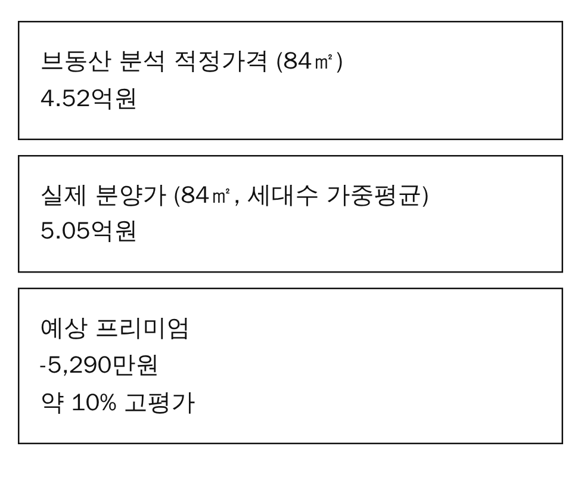

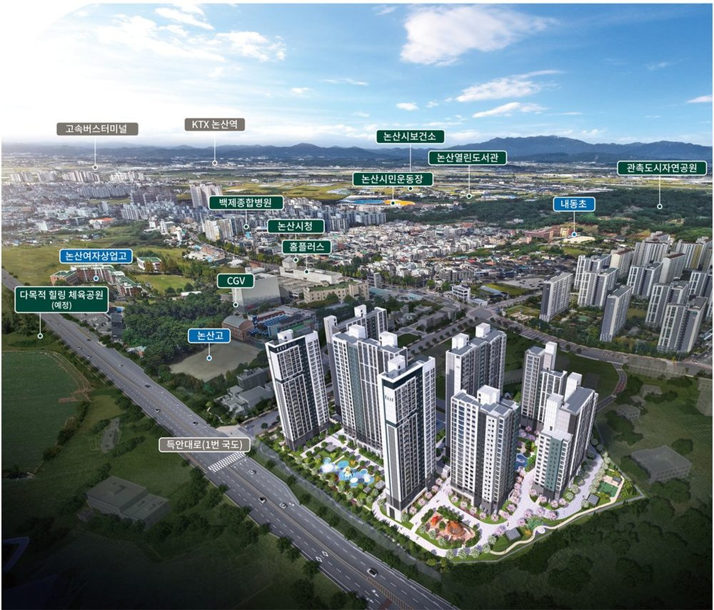

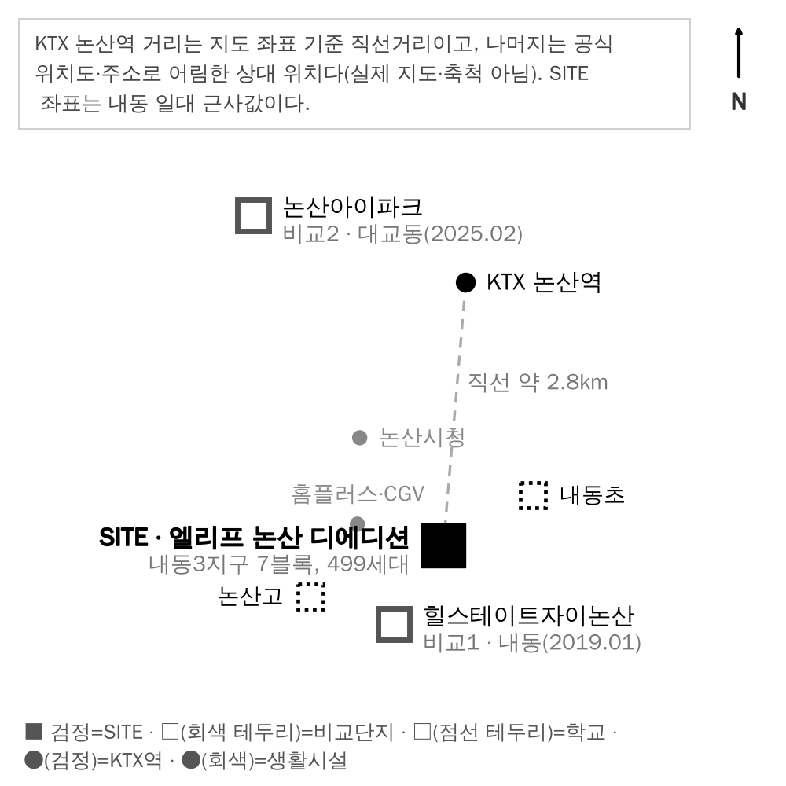

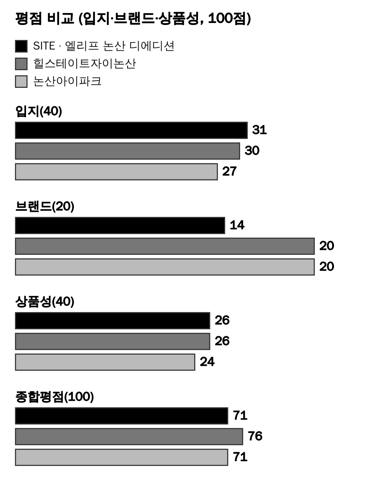

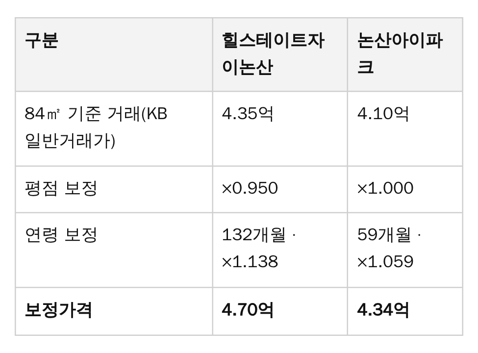

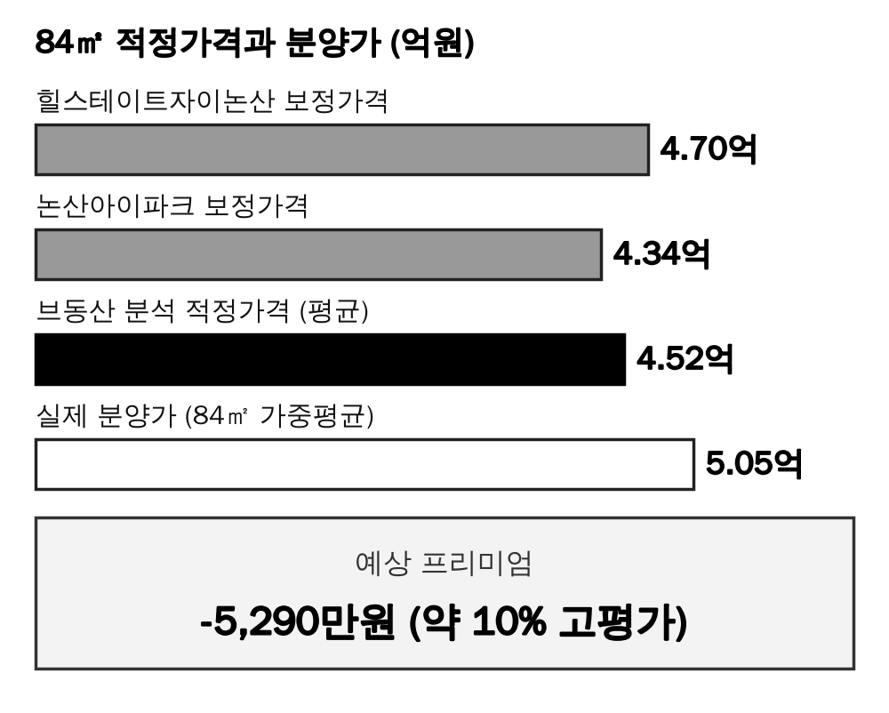

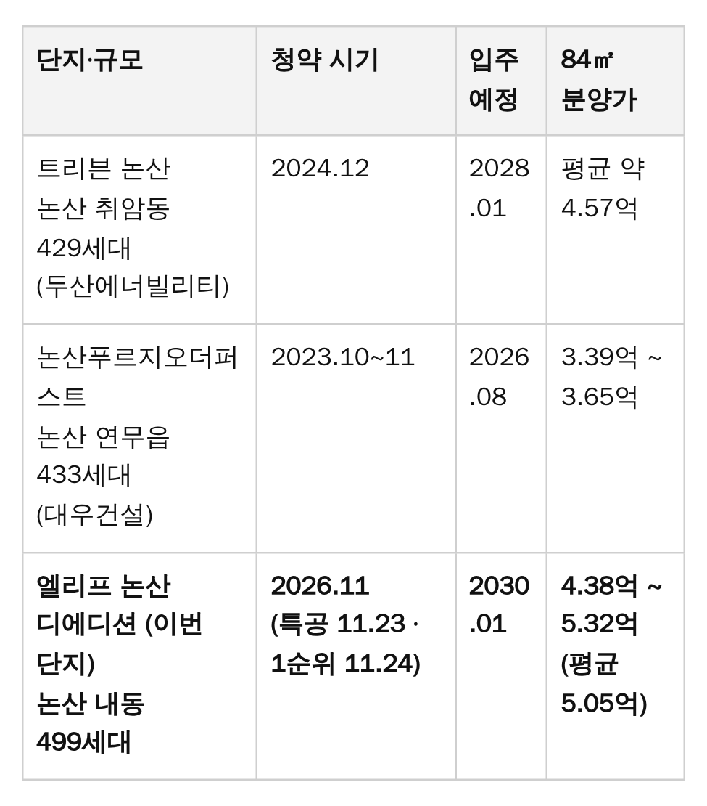

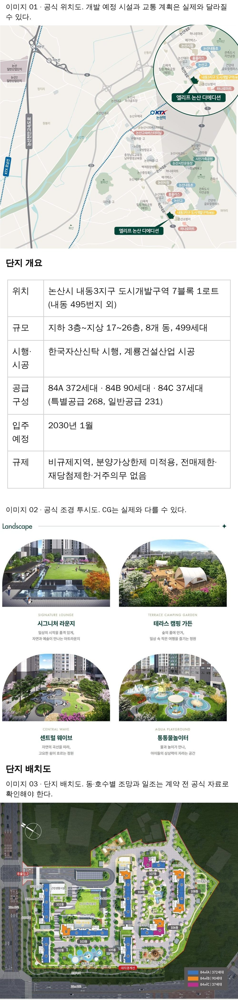

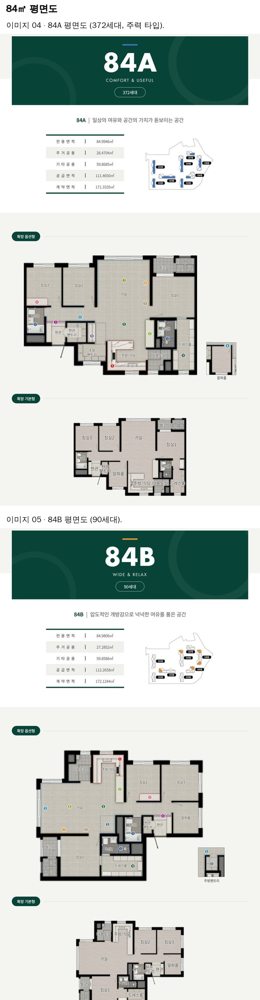

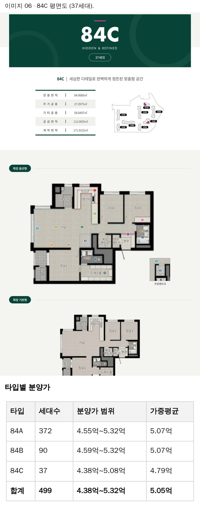

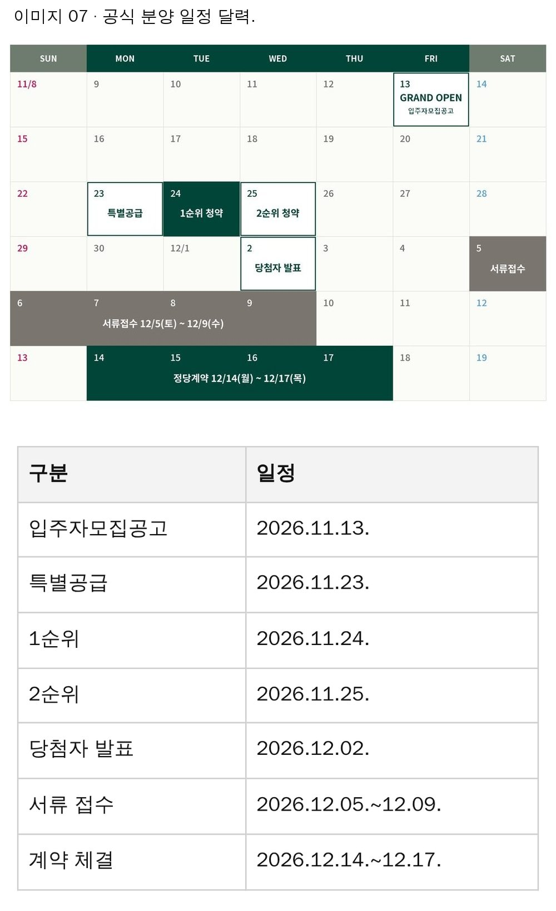

- 카테고리: 부동산이야기
- 제목 · 태그 입력 확인
- 대표 이미지(썸네일): cover.jpg
- 【사진】 자리표시 줄이 모두 지워지고 사진으로 바뀌었는지 훑어보기
- 발행 버튼